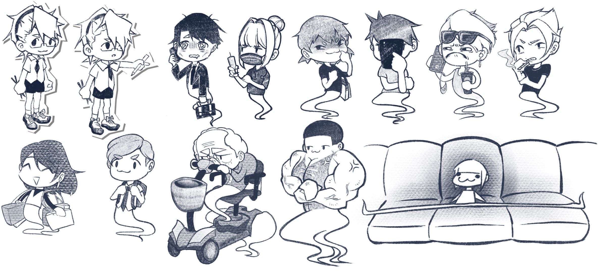
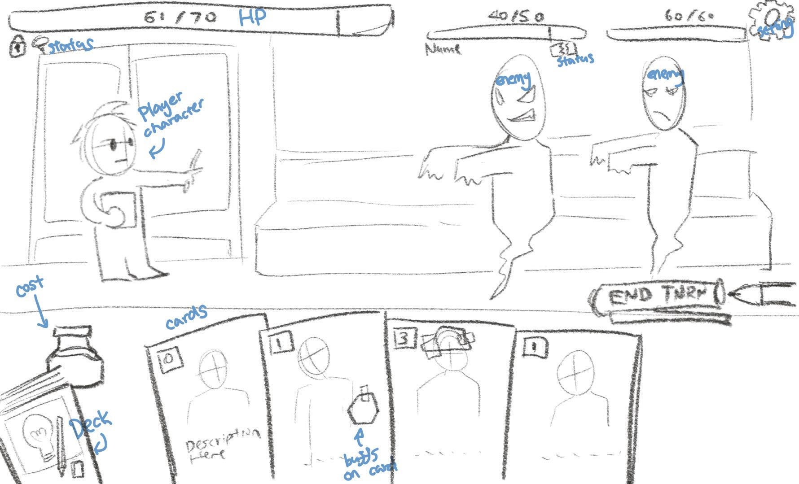
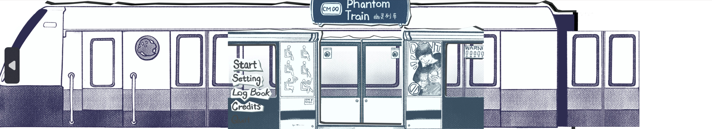

- An Indie Game made during fall semester 2024 at National University of Singapore (Exchange) -
Demo Video
About The Game
My Role: Artist, Frontend Game Developer
Tools: Procreate, Game Maker
Genre: 2D Card Game
Timeline: 1 month
Team Size: 4
Phantom Train is a single-player, turn-based roguelike deckbuilder.
Players navigate a train, defeating increasingly challenging enemies using card abilities.
Vanquished enemies drop items to enhance cards, with the game ending when the character
loses all health. It appeals to fans of card games, strategy, and the excitement of
discovering new roguelike combinations.
Play it here!
This game was created with other three students: Ho Yu Kang (Game Designer), Malorie Yoong Rui Yi (Quality Assurance), and Marcus Low Hui Yu (Backend Programmer).
My Contribution
Designed the art style based on the gameplay design and created the 2D art assets.

Character Designs
The game is set in the perspective of a college student doodling in their sketchbook while commuting to school by subway. The game humorously critiques uncivil behaviors on public transportation, such as pickpocketing, smoking, and seat hogging. Therefore, I chose a hand-drawn style for all game art assets, creating characters in a humorous and cute manner.
Designed and developed the user interfaces, coded interactive elements, and ensured the game’s visual presentation aligned with the player’s interactions.

Concept UI Design

Menu Design
In an already saturated market of roguelike card games, I strived to make the game UI distinctive yet clear and simple while aligning with the overall art style. My favorite part is the menu design, where a subway train passes by and lets the player board, enhancing the immersive experience.
Collaborated with the backend programmer to implement graphical elements, animations, and input handling.
Collaborated with QA and continuously refined the art and UI/UX based on feedback from playtesters.